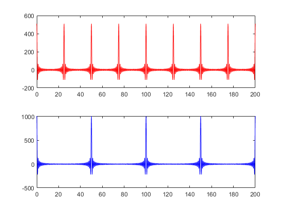

clear all; close all; clc; t = 0:0.1:200; % Define the time axis N1 = 51; % Set the number of frequency components for the first signal f = 159:0.04:161; % Define the frequency range for the first signal yt = 0; % Initialize the output signal for i=1:N1 % Loop through the frequency components and add them to the output signal yt = yt + (10*cos(2*pi*f(i)*t)); end subplot(211); % Create a subplot for the first signal plot(t,yt,'r'); % Plot the first signal N2 = 101; % Set the number of frequency components for the second signal f = 159:0.02:161; % Define the frequency range for the second signal yt = 0; % Initialize the output signal for i = 1:N2 % Loop through the frequency components and add them to the output signal yt = yt + (10*cos(2*pi*f(i)*t)); end subplot(212); % Create a subplot for the second signal plot(t,yt,'b'); % Plot the second signal %{ The code above generates two signals by summing sinusoids with frequencies within a certain range. The first signal is generated using 51 frequency components spaced 0.04 Hz apart, while the second signal is generated using 101 frequency components spaced 0.02 Hz apart. The output of the code is two plots of the signals over the time axis defined by t. %}
